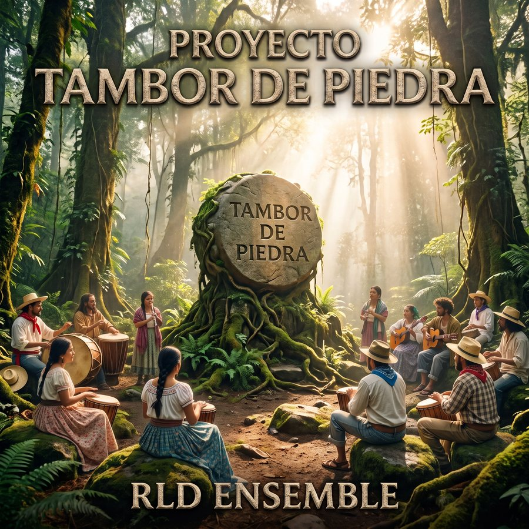

RLD ENSEMBLE · Tercer Proyecto · Trilogía
Tambor de Piedra
El mar, la piedra y la tierra
Tres obras conceptuales sobre las raíces de Honduras, publicadas en cinco álbumes. La primera mira hacia la costa garífuna; la segunda sube a la montaña lenca del occidente; el tercero baja a la tierra de Olancho para contar, en dos actos, la memoria de 1983.
La trilogía
TRES OBRAS, CINCO ÁLBUMES

Del naufragio frente a Yurumein al exilio de 1797 y la tierra nueva: rock progresivo atravesado por el tambor garífuna.

Los señoríos, Lempira, el Guancasco y la piedra que queda, en su forma más desnuda: voz, guitarra de nylon y capas mínimas.

Las mismas canciones con contrabajo, Rhodes, violín como contravoz y pulso libre. Sonido espacioso, cercano a ECM, Gismonti y Saluzzi.

Una cantata moderna en dos actos —Chema, el Padre Lupe y los nombres que el bosque guarda— contada con guitarra y voz.

El mismo libreto y las mismas 14 pistas, con el sonido del rock progresivo de los primeros años setenta.
Escuchar en